India's ambitious renewable energy target of 500 GW by 2030 has positioned Battery Energy Storage Systems (BESS) as a critical enabler for grid stability and renewable integration. Recognizing this strategic importance, the government has rolled out a comprehensive suite of policy incentives, subsidies, and tax structures that are fundamentally transforming the BESS deployment landscape across the country.
These financial mechanisms are not only accelerating project viability but also catalyzing investments worth tens of thousands of crores, establishing India as an emerging global hub for energy storage solutions.
Viability Gap Funding: The Primary Catalyst
The cornerstone of India's BESS deployment strategy is the Viability Gap Funding (VGF) scheme launched by the Ministry of Power Govt of India in September 2023. This scheme provides capital subsidy support to make storage projects economically viable, addressing the historically high upfront costs that have deterred large-scale adoption.
- Evolution and Scale-Up: The VGF program has undergone rapid expansion reflecting both falling battery prices and growing storage needs. Initially targeting 4 GWh with a budgetary outlay of ₹3,760 crore, the scheme was first revised in March 2025 to 13.2 GWh while maintaining the same budget allocation—a testament to how dramatically battery costs have declined. By June 2025, recognizing the accelerating storage requirements, the government approved a second tranche worth ₹5,400 crore to support an additional 30 GWh of BESS capacity, bringing total approved capacity to over 43 GWh.
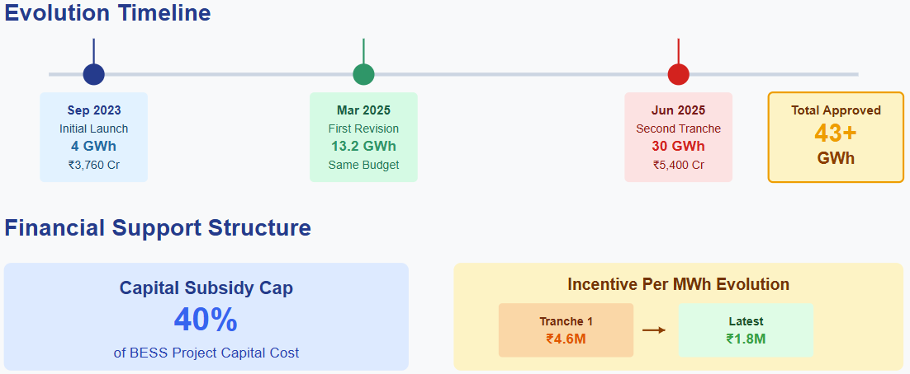
- Financial Support Structure: The VGF scheme provides substantial financial support capped at 40% of the capital cost of BESS projects. However, the incentive structure has evolved with market conditions. The first tranche offered support up to 30% of capex or ₹4.6 million per MWh, whichever was lower, due to reduced battery costs. For subsequent tranches, the ceiling was further adjusted to ₹1.8 million per MWh—a 33.3% reduction from the earlier cap of ₹2.7 million per MWh.
While this reduced support level could theoretically raise tariffs by around 10%, industry experts believe the impact will be offset by continuing declines in capital expenditure costs. The scheme's flexible approach ensures that incentives gradually withdraw as battery prices fall, maintaining tariff competitiveness with alternative sources.
- Disbursement and Allocation: VGF funding is strategically allocated across multiple stakeholders to maximize deployment. Of the 30 GWh second tranche, 25 GWh has been allocated to 15 states including Rajasthan, Gujarat, Maharashtra, Tamil Nadu, Karnataka, Andhra Pradesh, Madhya Pradesh, Telangana, Uttar Pradesh, Haryana, Kerala, Punjab, Chhattisgarh, Odisha, and Uttarakhand. The remaining 5 GWh is designated for NTPC to optimize thermal generation infrastructure and supply electricity during non-solar hours.
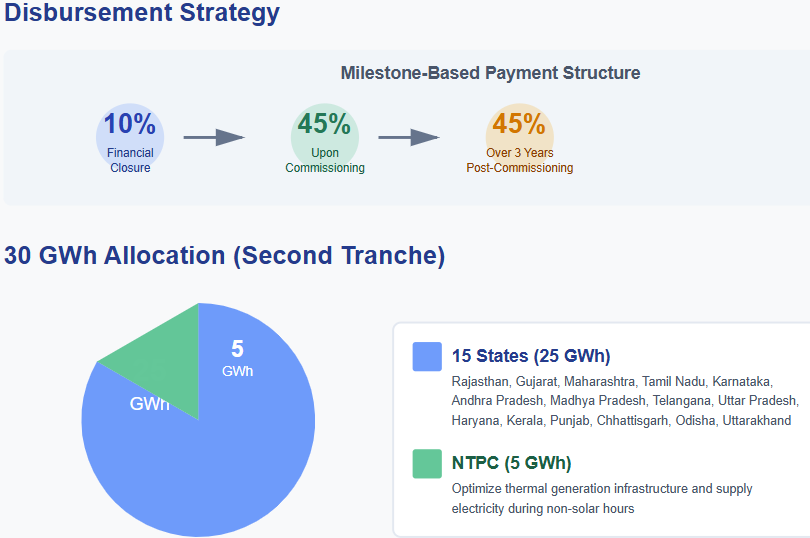
The disbursement follows a milestone-based approach: 10% upon financial closure, 45% upon commissioning, and the remaining 45% spread equally over three years post-commissioning. This structure aligns developer incentives with project execution timelines while managing fiscal expenditure.
- Impact on Tariffs: The VGF scheme has demonstrated remarkable success in reducing BESS tariffs. Auctions conducted under the framework have achieved monthly tariffs as low as ₹208,000-221,100 per MW—nearly 40% lower than non-VGF projects with similar specifications. The NHPC tender for 500 MW/1,000 MWh capacity recorded the lowest bid at ₹208,000 per MW per month, setting a new benchmark for the industry.
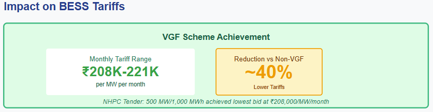
Interstate Transmission System (ISTS) Charges Waiver
Another significant incentive shaping BESS economics is the waiver of Inter-State Transmission System charges, which can substantially reduce the delivered cost of stored energy, particularly for projects supplying power across state boundaries.
- Eligibility and Duration: The Ministry of Power's June 2025 order provides a 100% ISTS charges waiver for co-located BESS projects commissioned on or before June 30, 2028, provided the power is consumed outside the state where the project is located. For a BESS to qualify as co-located, it must be connected at the same ISTS substation as the associated renewable energy project.
This waiver extends for 12 years from the commissioning date for eligible co-located BESS. The policy also introduces critical flexibility allowing battery systems that primarily charge from renewables to use grid power during contingencies, as long as grid drawal doesn't exceed 10% of the battery's annual energy requirement.
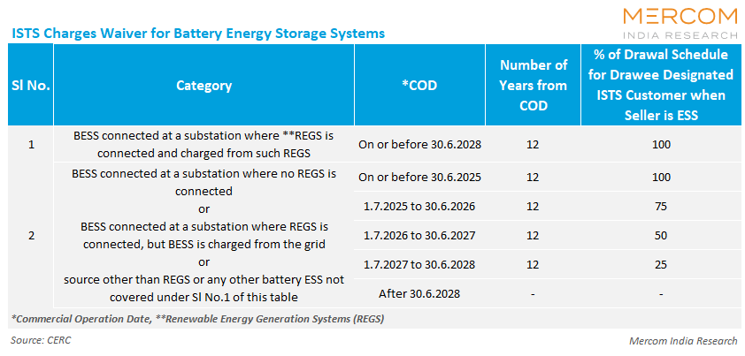
For non-co-located BESS projects, graded waivers apply based on commissioning dates, with eligibility phasing out after June 30, 2028. Pumped storage projects awarded for construction by June 30, 2028, receive a 25-year waiver.
- Economic Impact: The ISTS waiver reduces delivery costs by approximately ₹0.70-0.80 per kWh depending on load and distance. This substantial reduction significantly enhances project economics, particularly for utility-scale installations serving multiple states. By eliminating transmission charges, the waiver encourages renewable-rich states to develop storage infrastructure that can supply power to high-demand regions, optimizing resource utilization across the national grid.
Production-Linked Incentive Scheme for Battery Manufacturing
Addressing the upstream value chain, the government launched the Production-Linked Incentive (PLI) scheme under the National Programme on Advanced Chemistry Cell (ACC) Battery Storage in May 2021 with an outlay of ₹18,100 crore.
- Scheme Design and Allocation: The PLI scheme targets 50 GWh of ACC manufacturing capacity, with 40 GWh already awarded across two rounds to four beneficiary firms including Ola Cell Technologies, ACC Energy Storage, and Reliance New Energy Battery Storage. The remaining 10 GWh has been earmarked specifically for Grid Scale Stationary Storage (GSSS) applications, with plans to expand coverage to sectors like data centers, telecom infrastructure, and power backup systems.
- Incentive Structure: The scheme provides unprecedented support levels of approximately USD 43 million per GWh (about ₹300 million per GWh). To qualify for subsidies, companies must achieve domestic value addition of at least 25% within two years of commissioning and increase it to 60% within five years, while making mandatory investments of ₹2.25 billion per GWh.
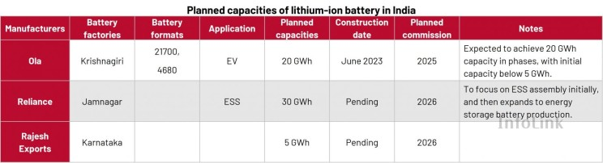
Subsidies are disbursed quarterly over five consecutive years once manufacturing facilities become operational and domestic value addition exceeds 25%. The subsidy amount per kWh is determined through a review process and capped at 20% of the cell sales price excluding GST.
- Implementation Challenges: Despite generous incentives, the PLI scheme faces implementation hurdles. Companies must commission facilities within two years—a challenging timeline given India's limited experience in battery manufacturing. Additionally, India's high dependence on imported critical raw materials like lithium, cobalt, and the four primary battery materials makes achieving the 60% domestic value addition threshold particularly challenging.
Tax Structures and GST Reforms
Taxation policy has emerged as a critical lever for enhancing BESS adoption, with recent reforms targeting affordability across the storage ecosystem.
- GST Rate Rationalization: In a landmark decision during the 56th GST Council meeting in September 2025, the government slashed GST rates on several energy storage components. Non-lithium-ion batteries including lead-acid, sodium, and flow batteries saw GST reduced from 28% to 18%. This reduction is particularly significant for grid-scale energy storage applications where these battery types remain cost-effective alternatives.
GST on lithium-ion batteries remains at 18%. However, industry advocates continue pushing for further reductions, arguing that the current rate significantly increases costs and hinders large-scale BESS adoption. Some experts recommend reducing BESS GST to 5% to align with electric vehicle battery taxation and accelerate deployment.
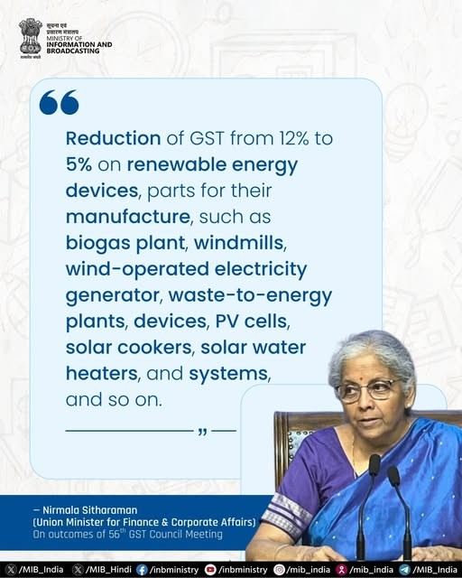
Simultaneously, GST on renewable energy devices and components including solar power generators, wind mills, and bio-gas plants was reduced from 12% to 5%. This broader reduction enhances the economics of hybrid renewable energy plus storage projects, which are gaining significant traction in India's tender pipeline.
- Customs Duty Adjustments: The customs duty landscape for battery imports reflects India's dual objectives of encouraging domestic manufacturing while managing cost pressures. In 2025, India increased customs duty on lithium-ion batteries from 10% to 20%, aligning with the "Make in India" initiative to provide domestic manufacturers with competitive advantages.
However, recognizing the nascent state of domestic manufacturing, the Union Budget 2025-26 introduced targeted relief. The government scrapped basic customs duty on lithium-ion battery scrap and waste (reduced from 5% to zero) and added 35 capital goods for EV battery manufacturing and 28 for mobile phone battery manufacturing to the exempted list. These exemptions strengthen the domestic battery storage ecosystem by reducing input costs for manufacturers while maintaining protective tariffs on finished products.
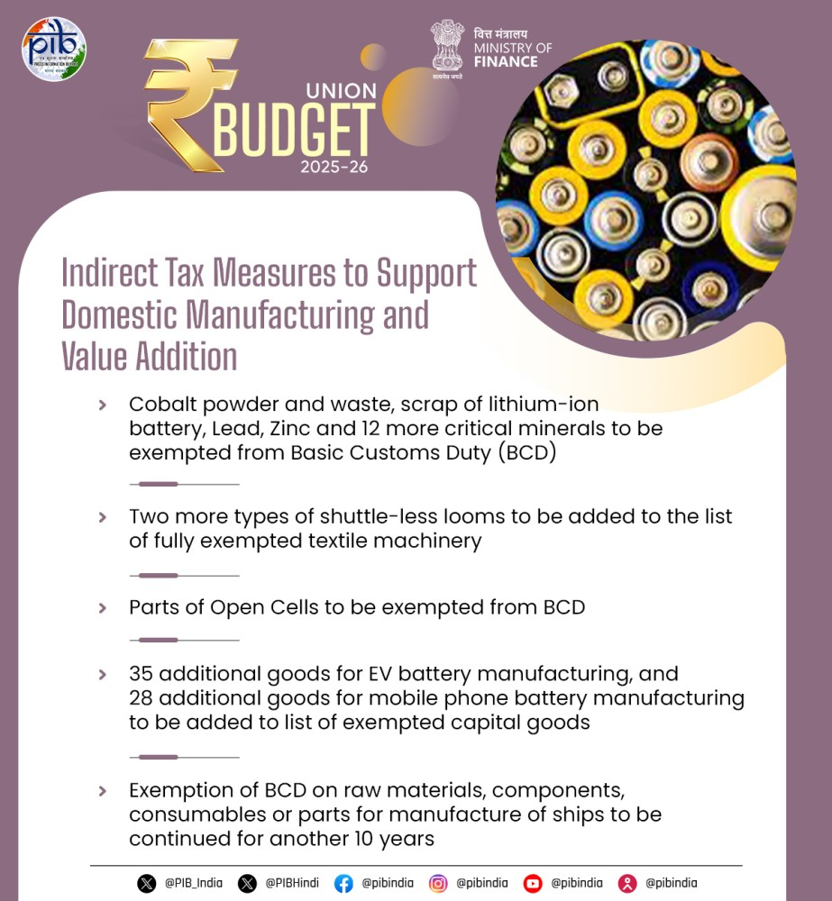
- Property Tax Exemptions: California-style property tax exemptions have been explored in some jurisdictions, though implementation remains limited in India. Under similar frameworks internationally, BESS integrated with solar facilities can qualify for acquisition value-based taxation rather than market value-based systems, reducing the annual tax burden on storage assets.
Energy Storage Obligation (ESO)
The introduction of Energy Storage Obligation alongside the existing Renewable Purchase Obligation represents a demand-side policy innovation creating guaranteed offtake for BESS projects.
- Trajectory and Targets: The Ministry of Power's July 2022 order established a progressive ESO trajectory starting at 1% of total energy consumption in FY 2023-24 and escalating to 4% by FY 2029-30, with annual increments of 0.5%. The ESO specifies that at least 85% of energy procured and stored on an annual basis must come from renewable sources.
- Projected Battery Demand: According to the Council on Energy, Environment and Water (CEEW) , the ESO framework will drive cumulative battery demand to 327 GWh by 2029-30, with annual additions increasing from 57 GWh in 2023-24 to 59 GWh in 2029-30. These projections align with the Central Electricity Authority's estimate of 236 GWh BESS capacity needed by 2031-32.

The ESO creates strong incentives for distribution companies, industrial consumers, and other obligated entities to invest in energy storage solutions. States falling short of their ESO targets face potential penalties or must purchase shortfall through market mechanisms, creating a compliance-driven demand floor for BESS projects.
Ancillary Services Market Framework
Beyond capacity and energy payments, the ability to monetize ancillary services represents an increasingly important revenue stream for BESS projects, with regulatory frameworks evolving to unlock this value.
- Market Structure: The Central Electricity Regulatory Commission's regulations enable BESS to provide both Secondary Reserve Ancillary Services (SRAS) and Tertiary Reserve Ancillary Services (TRAS). SRAS requires response within 30 seconds with minimum duration of 30 minutes, while TRAS involves longer response times and deployment durations.
BESS can earn multiple revenue streams through these services. In SRAS Down, batteries can effectively get paid to charge by absorbing excess grid energy, transforming what would normally be a cost into income. Accuracy bonuses further enhance returns for precise performance.
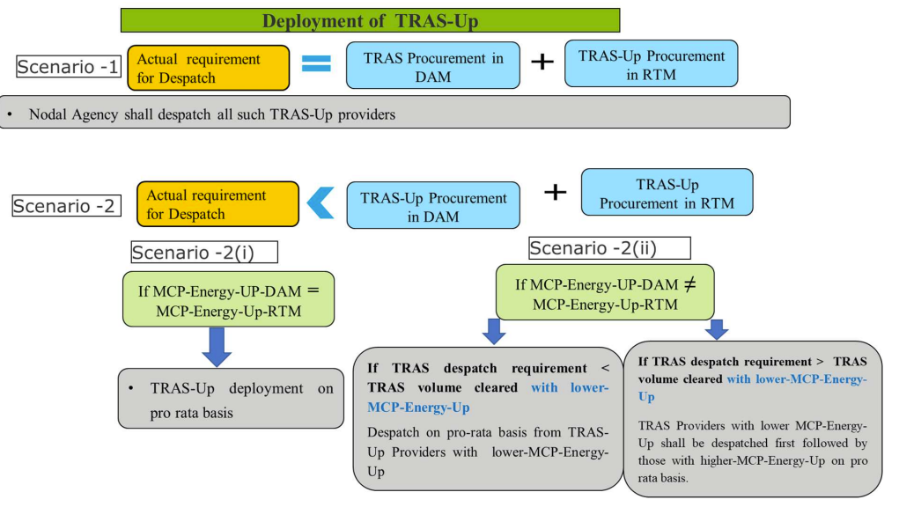
- Market Participation Barriers: Despite regulatory eligibility, BESS participation in ancillary markets remains limited by guidance gaps and transparency issues. Market prices for TRAS remain opaque even after market-based procurement began in June 2023, while SRAS continues to be procured out-of-market. Increasing accessibility and transparency is essential to incentivize BESS investments and unlock the substantial savings possible through these grid services.
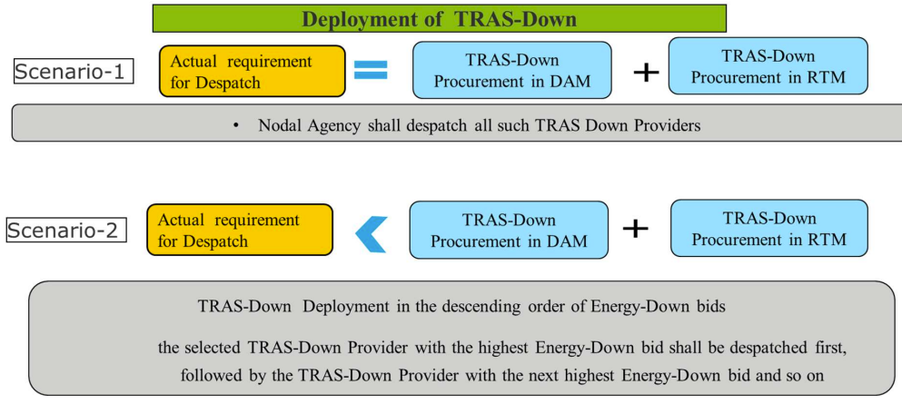
When ancillary services are successfully layered with day-ahead market arbitrage, BESS projects can achieve internal rates of return (IRR) approaching 24%, compared to approximately 17% for projects relying solely on energy arbitrage.
Financing Models and Investment Structures
The policy ecosystem has enabled diverse financing models that cater to different risk appetites and capital availability across the BESS value chain.
- CAPEX vs. OPEX Models: Under Capital Expenditure (CAPEX) models, industrial entities purchase and own BESS outright, requiring substantial initial investment of $420-700 per kWh for utility-scale installations. This approach delivers strong financial returns with IRR ranging from the mid-teens to low twenties, depending on revenue stacking opportunities. The CAPEX model provides complete ownership and control, allowing industries to optimize usage patterns and capture full lifecycle value.
Alternatively, Operational Expenditure (OPEX) models exemplified by Battery-as-a-Service eliminate upfront capital requirements through subscription-based payment structures. Third-party providers own, operate, and maintain the BESS while customers pay predictable quarterly or monthly fees. This model democratizes access to storage technology, particularly for entities with capital constraints or risk aversion toward emerging technologies.
- Funding Opportunity: The BESS ecosystem represents a ₹3.5 trillion funding opportunity through FY2032, with approximately ₹800 billion earmarked for upcoming cell manufacturing capex. This massive investment pipeline spans project-level deployment, upstream manufacturing, and enabling infrastructure, creating opportunities across the financial services spectrum from project finance to venture capital.
Contractual Frameworks and Market Design
Beyond financial incentives, standardized contractual frameworks and market design innovations are critical for scaling BESS deployment sustainably.
- Power Purchase Agreement Structure: The Ministry of Power's 2022 guidelines under Section 63 of the Electricity Act provide a comprehensive framework for BESS procurement through competitive bidding. These technology-agnostic and location-neutral guidelines mandate minimum capacities of 50 MW for inter-state systems and 1 MW for intra-state systems.
Standard agreements include Battery Energy Storage Purchase Agreements (BESPA) between developers and intermediary procurers, and Battery Energy Storage Sale Agreements (BESSA) between intermediaries and end consumers. These back-to-back structures allocate risks appropriately while enabling intermediary agencies like SECI to facilitate procurement without assuming residual liability.
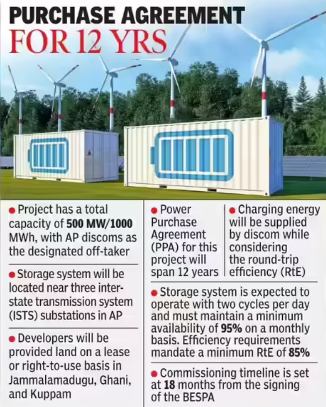
Contract periods typically span 10-12 years, with developers required to commission projects within 18 months of signing agreements. The BESS capacity should preferably have a two-hour discharge duration with an average of 1.5 cycles per day, though four-hour and six-hour duration systems are increasingly being tendered.
- Contractual Innovations: Forward-looking contract structures are evolving to enhance project viability. Flexible PPAs that include guaranteed offtake alongside clauses allowing monetization of excess generation improve revenue certainty. Tolling agreements with third-party optimizers enable specialized firms to manage BESS operations for daily arbitrage, ancillary market participation, and other use cases based on project configuration.
The introduction of BESS Balancing Pools (BBP) represents a sophisticated financial mechanism to stabilize revenue fluctuations. When energy sales exceed costs covering fixed charges and trading margins, surpluses are deposited into the BBP; during shortfall periods, the pool compensates deficits. This systematic management of cash flows reduces project risk and enhances investor confidence.
Complementary Incentives and Support Measures
Beyond direct financial support and tax structures, several complementary initiatives strengthen the BESS deployment ecosystem.
- Domestic Content Requirements: The VGF Guidelines 2025 mandate that BESS projects use Indian-developed Energy Management Systems (EMS) software, promoting indigenous capability development. While this requirement adds complexity, it supports long-term technological self-reliance and creates opportunities for domestic software developers specializing in grid optimization algorithms.
- Quality Standards and Certification: The Central Electricity Authority has proposed establishing testing and certification facilities within India to ensure quality and innovation in domestically manufactured components. These infrastructure investments reduce dependence on international certification, lower costs, and accelerate time-to-market for Indian manufacturers.
- Research and Development Support: Policy proposals include R&D incentives, skill development programs, and government-backed financing mechanisms to help manufacturers scale operations and adopt advanced technologies. These initiatives address the steep learning curve associated with rapidly evolving battery technologies and mitigate investment risks in breakthrough innovations.
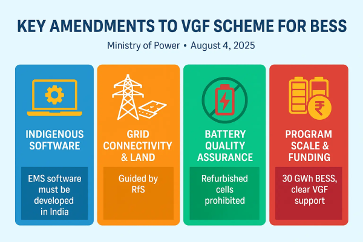
Challenges and Policy Gaps
Despite the comprehensive policy framework, several challenges persist in translating incentives into large-scale deployment.
- Execution Risks: Between 2022 and May 2025, India auctioned approximately 12.8 GWh of BESS capacity, yet only about 219 MWh is reported operational—leaving a massive pipeline under construction. Concerns around underbidding, delays in power purchase agreements, transmission interconnection bottlenecks, and high financing costs raise questions about execution capability.
- Regulatory Uncertainty: While the Ministry of Power has issued comprehensive guidelines, state-level regulatory frameworks remain inconsistent. Only progressive states like Andhra Pradesh, Rajasthan, and Gujarat have developed detailed regulations. Broader adoption of storage-friendly policies across all states is necessary to meet national energy storage requirements.
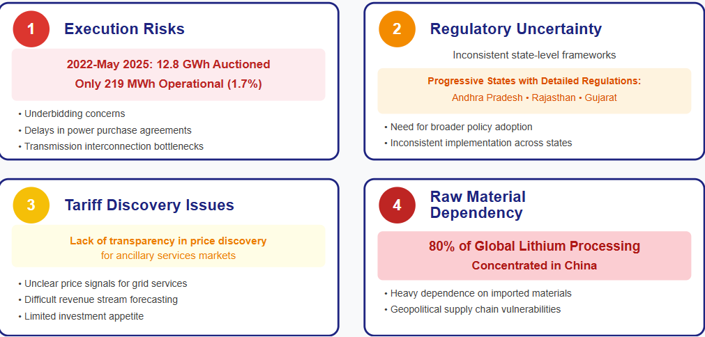
- Tariff Discovery Mechanisms: The transparency of price discovery in ancillary services markets requires substantial improvement. Without clear price signals, developers struggle to accurately forecast revenue streams from grid services, limiting investment appetite despite favorable regulations.
- Raw Material Dependency: India's dependence on imported critical minerals and battery materials creates supply chain vulnerabilities. Approximately 80% of global lithium processing capacity is concentrated in China, exposing Indian manufacturers to geopolitical risks. Securing raw material supplies through strategic partnerships and domestic mineral exploration is essential for sustainable sector growth.
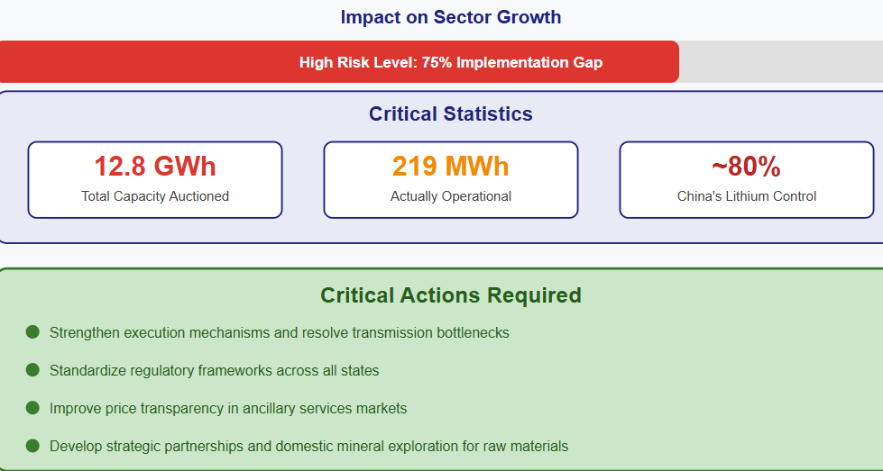
Future Outlook
India's policy architecture for BESS deployment represents one of the world's most comprehensive and rapidly evolving frameworks. The combination of substantial capital subsidies through VGF, transmission charge waivers, manufacturing incentives via PLI, favorable tax structures, and mandatory storage obligations creates a multi-layered support system addressing different barriers across the value chain.
The Central Electricity Authority projects India will require 47.24 GW/236.22 GWh of BESS capacity by 2031-32 to integrate planned renewable capacities. With over 43 GWh already approved under VGF schemes and aggressive tendering activity across states, India is positioning itself to meet these targets while creating a competitive domestic manufacturing ecosystem.